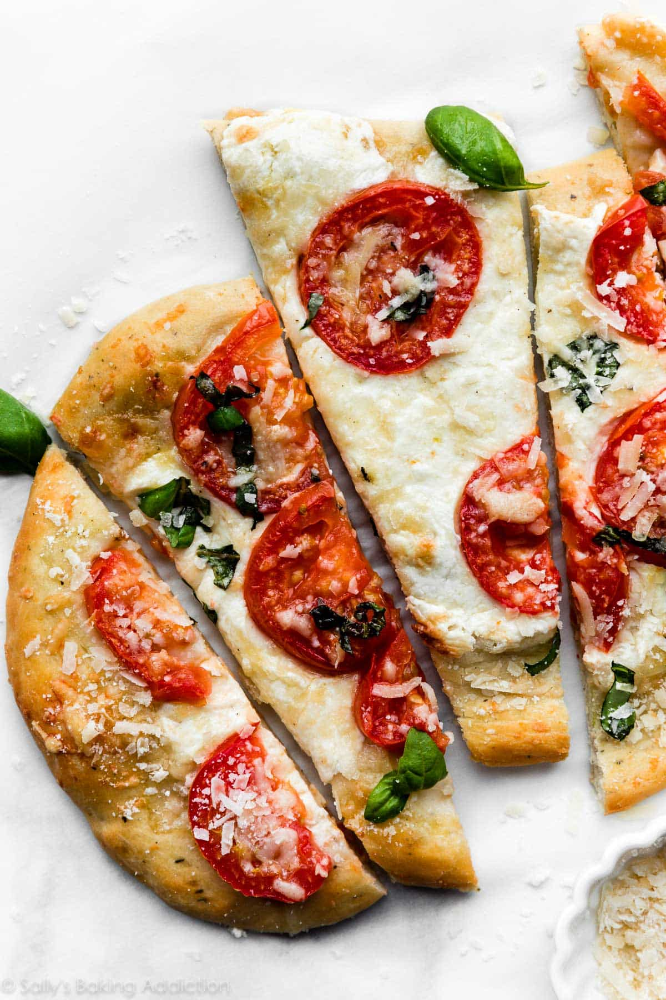

-
Prep Time:
1 hour
-
Cook Time:
20 minutes
-
Total Time
1 hour and 20 minutes
-
Serving Size:
2-4 people
Ingredients
- 1 teaspoon active dry or instant yeast
- 1 teaspoon of granulated sugar
- 3/4 cup (180ml)warm water
- 2 cups (250g) all-purpose flour or bread flour
- 1 tablespoon (15ml) olive oil, plus 2 teaspoons for brushing the dough
- 1 teaspoon salt
Instructions
- Prepare the dough: Whisk the yeast, sugar, and warm water together in the bowl of your stand mixer. Loosely cover and allow to sit for 5–10 minutes until foamy and frothy on top.
- Add the flour, olive oil, and salt (and garlic/seasoning if using). Mix on low speed with the dough hook attachment until combined, about 2 minutes.
- Knead the dough: Keep the dough in the mixer and beat with the dough hook on low speed for an additional 6–8 minutes, or knead by hand on a lightly floured surface for 6–8 minutes. After kneading, the dough should still feel a little soft. Poke it with your finger—if it slowly bounces back, your dough is ready to rise. If not, keep kneading.
- Place the dough in a greased bowl and cover with plastic wrap, aluminum foil, or a clean kitchen towel. Allow to sit and rest for 45 minutes at room temperature. Once it has rested and slightly risen, you can continue with the recipe or place the covered dough in the refrigerator for up to 2 days.
- As the dough is resting and rising, prepare your toppings.

- Preheat oven to 475°F (246°C).
- Shape the dough: Punch the dough down to release any air. Divide the dough in half. On a lightly floured surface with floured hands and working with one dough piece at a time, begin shaping and stretching the dough until it is 1/4 inch thick. You can use a floured rolling pin for this too. Repeat with the second piece of dough. Carefully transfer both pieces of dough to a parchment paper or silicone-mat lined baking sheet, or use a pizza stone.
- Poke your fingers all around the surface of the flatbreads or prick a few holes with a fork. Drizzle or brush each with 1 teaspoon of olive oil. Top each with your favorite toppings.
- Bake for 15–20 minutes or until the crust and toppings are browned to your liking. Remove from the oven. Slice and serve warm.
- Cover and store leftovers in the refrigerator for up to 1 week.